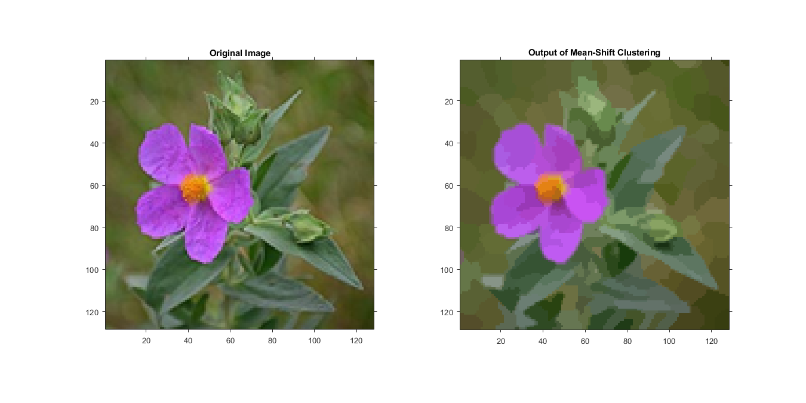
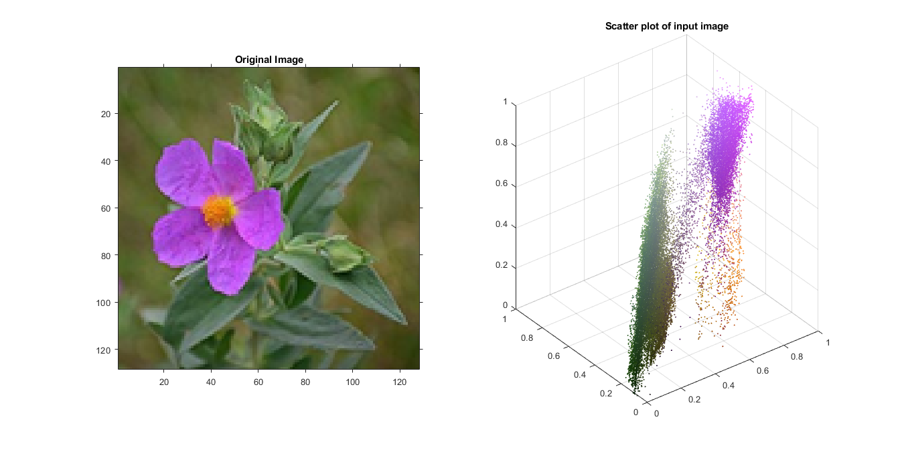
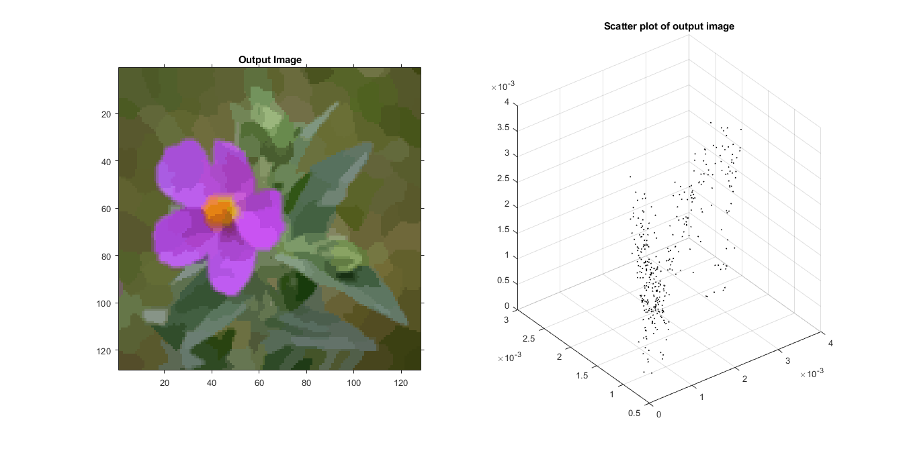

MyMainScript for Mean Shift Segmentation
Contents
Optimum Parameters:
Intensity bandwidth (H_i) = 60 Spatial bandwidth (H_s) = 5 Iterations = 25 K in K-NN = 300 to 350
tic;
Flower
input = imread('../data/flower.png');
H_i = 60;
H_s = 5;
Iterations = 25;
output = myMeanShiftSegmentation(input,H_i,H_s,Iterations);
Results
input_shrink = imresize((input),0.5); %my_imshow(input_shrink,'Input Image', output,'Output Image'); figure('units','normalized','outerposition',[0 0 1 1]) subplot(1,2,1), imshow(input_shrink); title('Original Image'); subplot(1,2,2), imshow(output); title('Output of Mean-Shift Clustering'); daspect([1 1 1])
Analysis
The output of the mean-shift need not have converged completely at the end of a fixed number of iterations, and including an epsilon bound check may take an unbounded amount of time to converge. Hence the output shown may still have some finite gradients.
Plotting scatter plot
Input
[row_ip, col_ip] = size(input(:,:,1)); li = double(reshape(input,row_ip*col_ip,3))/255; subplot(1,2,1), imshow(input_shrink); title('Original Image'); subplot(1,2,2), scatter3(li(:,1), li(:,2), li(:,3),ones(row_ip*col_ip,1), li); title('Scatter plot of input image');
Output
[row_op, col_op] = size(output(:,:,1)); lo = double(reshape(output,row_op*col_op,3))/255; subplot(1,2,1), imshow(output); title('Output Image'); subplot(1,2,2), scatter3(lo(:,1), lo(:,2), lo(:,3),ones(row_op*col_op,1), lo); title('Scatter plot of output image'); toc;
Elapsed time is 69.940441 seconds.
Baboon
tic;
input = imread('../data/baboonColor.png');
H_i = 60;
H_s = 5;
Iterations = 25;
output = myMeanShiftSegmentation(input,H_i,H_s,Iterations);
Results
input_shrink = imresize((input),0.5); %my_imshow(input_shrink,'Input Image', output,'Output Image'); figure('units','normalized','outerposition',[0 0 1 1]) subplot(1,2,1), imshow(input_shrink); title('Original Image'); subplot(1,2,2), imshow(output); title('Output of Mean-Shift Clustering'); daspect([1 1 1])

Plotting scatter plot
Input
[row_ip, col_ip] = size(input(:,:,1)); li = double(reshape(input,row_ip*col_ip,3))/255; subplot(1,2,1), imshow(input_shrink); title('Original Image'); subplot(1,2,2), scatter3(li(:,1), li(:,2), li(:,3),ones(row_ip*col_ip,1), li); title('Scatter plot of input image');

Output
[row_op, col_op] = size(output(:,:,1)); lo = double(reshape(output,row_op*col_op,3))/255; subplot(1,2,1), imshow(output); title('Output Image'); subplot(1,2,2), scatter3(lo(:,1), lo(:,2), lo(:,3),ones(row_op*col_op,1), lo); title('Scatter plot of output image');

Notes on Implementation
We highly vectorised the code and avoided loops as far as possible
toc;
Elapsed time is 289.690932 seconds.